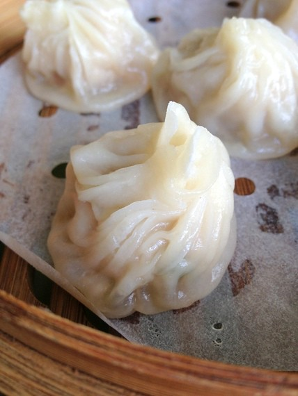

Dumplings

What are Dumplings?
A dumpling is a small mass of dough that can be boiled, fried, baked, or steamed.
There are a ton of dumpling varieties out there, from pork- and
cabbage-filled Chinese dumplings to cheesy Polish dumplings.
Ingredients
- Mojo Wrapper
- Meat
- Garlic
- Onion
- Carrots
- Leafy Greens
- Soy Sauce
- Sesame Oil
Steps
- Cut the garlic, onion, carrots, and leafy greens
into small bits
- Add them to your meat
- Add soy sauce and sesame oil
- Mix them altogether thoroughly
- Portion the fillings and put it in the mojo wrappers
- Wrap the mojo wrappers
- Use a steamer and steam until they look translucent